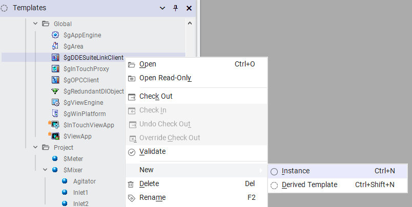
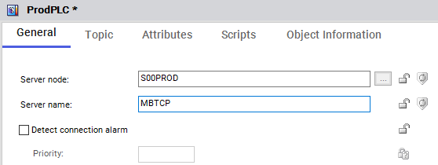
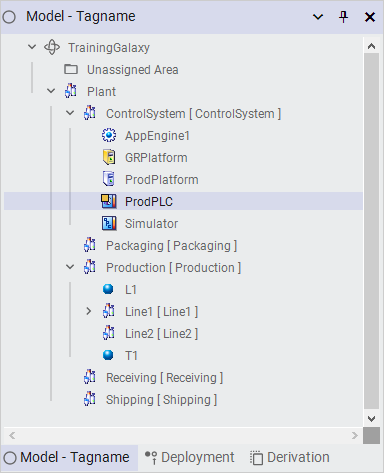

Data flow path: Application Object → DDE/SuiteLink Client → OI Server → PLC (Module 5, page 5-13)
Source: AVEVA Application Server 2023 Training Manual, Module 5, Section 2 + Lab 9 (pages 5-13 to 5-12)
How Application Server communicates with field devices through Device Integration objects — and configuring a DDE/SuiteLink client to connect to a PLC via an OI Server.
Reference: Module 5, Section 2 (page 5-13)
To understand Device Integration (DI) objects, you first need to see the complete data path from an application object in the Galaxy all the way to a physical PLC on the plant floor.
Reference: Module 5, Section 2 (pages 5-13 to 5-14)
The $gDDESuiteLinkClient is the built-in Galaxy object that acts as the communication bridge. Every Galaxy ships with one — it is a system global object that you configure for your specific devices.

| Tab / Property | Purpose |
|---|---|
| Topic tab | Defines topic names that map to specific data sets on the OI Server. Each topic has a Scan Mode and associated Attribute/Item Reference pairs. |
| Available Topics table | Shows topic names and their scan mode (e.g., Polled, Unsolicited, etc.). Initially empty until you configure connections. |
| Associated Attributes table | Maps Galaxy attribute references (e.g., ProdPLC.Topic1.$Sys$Status) to item references on the OI Server side. |
Reference: Module 5, Section 2 (pages 5-14 to 5-15)
To connect to a PLC, you create a new instance of the $gDDESuiteLinkClient template in the Templates pane. This becomes your dedicated communication object for that device.

Step 1: In the Templates pane, expand the system templates and locate $gDDESuiteLinkClient.
Step 2: Right-click it and select New → Instance (for a direct instance) or New → Derived Template (for a template you can customize further).
Step 3: Name the new object ProdPLC — this object will represent your production PLC connection.
Step 4: Open the ProdPLC object editor and configure its General tab:

| Property | Value for Simulator | Value for ProdPLC |
|---|---|---|
| Server node | SOOPROD |
S00PROD |
| Server name | OI.SIM.1 |
MBTCP |

MBTCP for Modbus TCP, OI.SIM.1 for a simulator).Reference: Module 5, Section 2 (page 5-15)
Your ProdPLC DI object, like all other objects, lives within the Galaxy hierarchy. Here is how the Galaxy structure looks with all the objects you have created so far:

The Galaxy hierarchy at this point:
| Area | Objects |
|---|---|
| Plant → ControlSystem | AppEngine1 (Application Engine), GRPlatform (GR node), ProdPlatform (production node), ProdPLC (DI object for production PLC), Simulator (DI object for simulator) |
| Plant → Production | Line1, Line2 (production lines with contained equipment) |
Reference: Module 5, Lab 9 (pages 5-16 to 5-20)
With both the ProdPLC and Simulator objects configured, you need to deploy them so the runtime can begin communicating with the OI Servers.
In the Model view, locate the objects you want to deploy. Right-click the object (or a parent area containing multiple objects) and select Deploy from the context menu.

Step 1a: Right-click the ProdPLC object in the Model-Tagname view.
Step 1b: Select Deploy. The Galaxy Repository sends the deployment command to the target platform.
Step 1c: Wait for the deployment to complete. The object's icon should show a green indicator when successfully deployed.
Step 1d: Repeat for the Simulator object if not already deployed.
After deployment, you can check whether the DI object has successfully connected to the OI Server by examining its diagnostic attributes.

Key attributes to check:
| Attribute | Expected Value | What It Means |
|---|---|---|
ConnectionStatus |
Connected | The DI object has established a live connection to the OI Server |
Reconnect |
false | The connection is stable — no reconnection attempts in progress |
ScanState |
true | The DI object is actively scanning/polling the OI Server for data |
Topic1.$Sys$Status |
true | The configured topic is active and communicating properly |
Once connected, the DI object starts pulling live values from the PLC. You can see these values in real time by opening the object and viewing its attributes.

When you see attributes with:
C0:Good means the value is fresh and reliable. If you see 0:Bad or 80:Uncertain, it means the communication path has an issue, even if the value looks reasonable.
| Component | Role | Lives On |
|---|---|---|
| $gDDESuiteLinkClient | Galaxy DI object — maps attributes to PLC items via topics | Galaxy database (deployed to Platform Engine) |
| OI Server | Protocol translator — bridges SuiteLink to PLC protocol | Dedicated Windows machine (the OI Server node) |
| PLC | Field device providing process data | Plant floor |
Q1: What are the four components in the data path from an Application Object to a PLC?
Application Object → DDE/SuiteLink Client → OI Server → PLC
Q2: What is the purpose of the OI Server in the communication path?
The OI Server is a protocol translator — it bridges SuiteLink/DDE communication from Application Server to the native protocol spoken by the PLC (e.g., Modbus TCP, Allen-Bradley).
Q3: What two properties must be correctly configured on a DI object for it to connect to an OI Server?
The Server node (computer name where the OI Server runs) and the Server name (the OI Server instance name, e.g., MBTCP).
Q4: What does a ConnectionStatus of "Connected" tell you?
The DI object has successfully established a live connection to the OI Server and is ready to exchange data with the PLC.
Q5: What does Quality code "C0:Good" indicate about a PLC value?
The value is fresh, reliable, and current — the communication path is healthy and the data can be trusted.
Click each answer to reveal it.
Next: Lesson 17 — Lab 10: Configuring the Device Integration Object